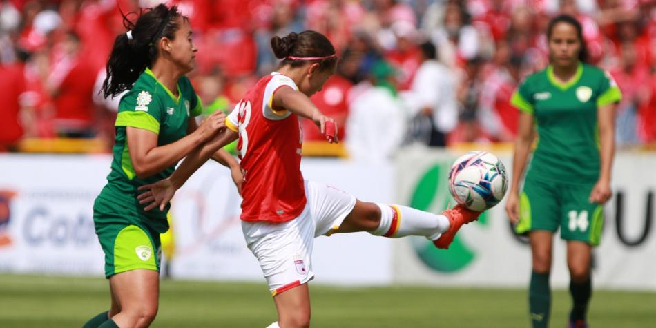

¿En qué va la planificación de la Liga femenina de fútbol?
La Liga femenina 2019 sigue su proceso para ser una realidad. El comité designado para proyectar y organizar el campeonato avanza con reuniones quincenales para trabajar en diferentes frentes, pero en particular en dos tareas fundamentales: la consecución de recursos y la elaboración del formato del torneo, que se mantiene para el mes de agosto, después de la Copa América.
Este torneo será un torneo corto y se dara en agosto y debe terminar antes del comienzo de la Copa Libertadores femenina, programada para el mes de noviembre. Ya en el 2020 se estructuraría el formato normal. Este torneo sirve de mucha ayuda para dar a conocer las habilidades que las mujeres tienen al practicar este deporte al igual que los hombres.